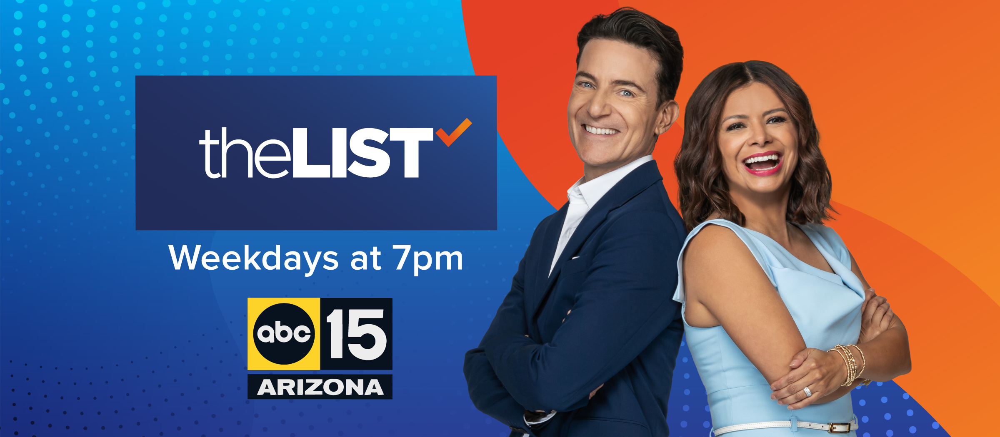
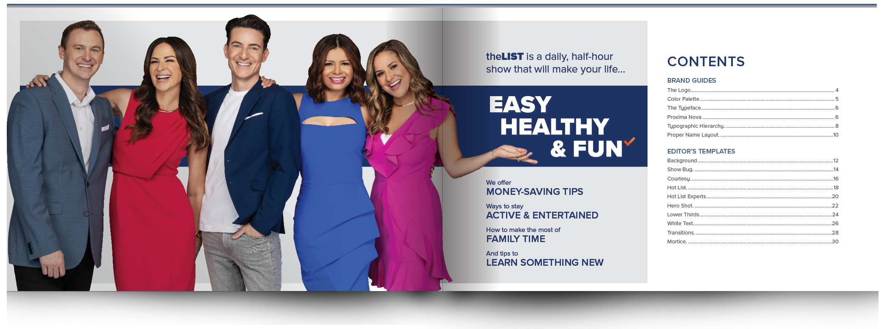
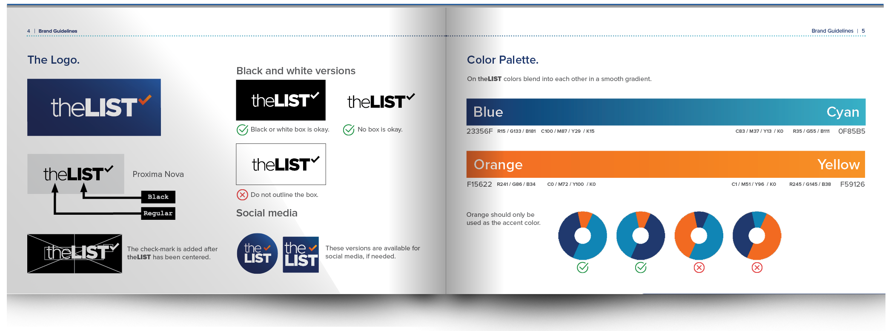
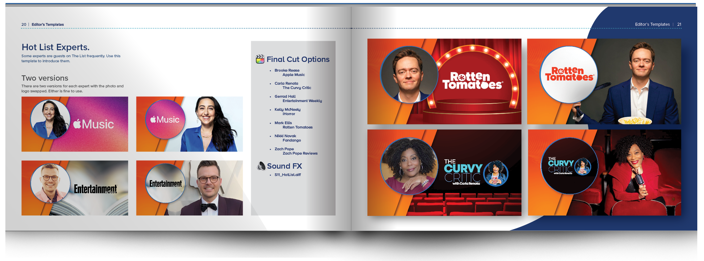
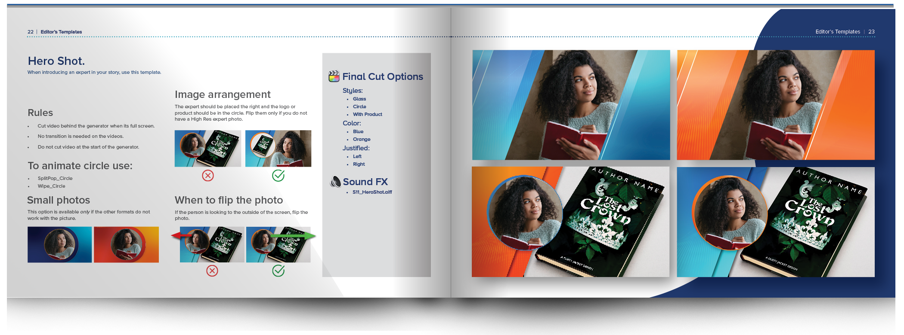
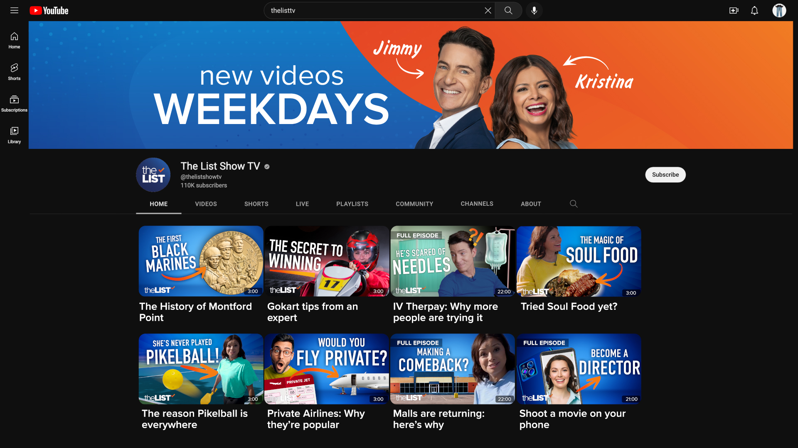

The List is a nationally syndicated television show that airs new episodes five days a week. The List provides information with a positive twist on topics you’ll want to share; like money-saving tips, fun ways to stay active and how to make the most of family time.
The graphics team and I designed this look of teal and orange with a waving dot matrix for The List. It was clear that we needed a book of guidelines that also cataloged the show’s graphical assets.




Much of the style guide goes over the rules for using graphics templates, when and where to use them and which sound effect to pair with it. I love the challenge of building a single template that can achieve many looks with just a few clicks. These were built for Final Cut X using Apple Motion 5.
The List is a graphics-driven show. For each episode, I animated custom graphic inserts that were tailored to each story. These had a fast turnaround. I enjoyed the opportunity to be creative on a moment’s notice.
ABCs of Bike Maintenance
The Art of Swedish Death Cleaning
Drive-Thru Everything
How to sell your Haunted House
Mother's Day Brunch
Paleta Bars
Color by your Zodiac
I worked at The List for nine years, and in that time the show grew immensely in popularity. We branched out and began posting our stories on YouTube.
115k
Subscribers on YouTube
238k
Followers on Facebook
